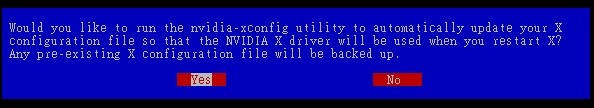

23.3 显卡驱动程序安装范例
虽然你的 X 窗口系统已经顺利的启动了，也调整到你想要的分辨率了，不过在某些场合下面，你想要使用显卡提供的 3D 加速功能时，却发现 X 提供的默认的驱动程序并不支持！此时真是欲哭无泪啊～那该如何是好？没关系，安装官方网站提供的驱动程序即可！ 目前 （2015） 世界上针对 x86 提供显卡的厂商最大的应该是 Nvidia / AMD （ATI） / Intel 这三家 （没有照市占率排列）， 所以下面鸟哥就针对这三家的显卡驱动程序安装，作个简单的介绍吧！
由于硬件驱动程序与核心有关，因此你想要安装这个驱动程序之前，请务必先参考第二十一章与第二十二章的介绍，才能够顺利的编译出显卡驱动程序喔！ 建议可以直接使用 yum 去安装“ Development Tools ”这个软件群组以及 kernel-devel 这个软件即可。

Tips 因为你得要有实际的硬件才办法安装这些驱动程序，因此下面鸟哥使用的则是实体机器上面装有个别的显卡的设备，就不是使用虚拟机了喔！
23.3.1 NVidia
虽然 Xorg 已经针对 NVidia 公司的显卡驱动程序提供了 "nouveau" 这个模块，不过这个模块无法提供很多额外的功能。 因此，如果你想要使用新的显卡功能时，就得要额外安装 NVidia 提供的给 Linux 的驱动程序才行。
至于 NVidai 虽然有提供驱动程序给大家使用，不过他们并没有完全释出，因此自由软件圈不能直接拿人家的东西来重新开发！ 不过还是有很多好心人士有提供相关的软件库给大家使用啦！你可以自行 google 查阅相关的软件库 （比较可惜的是，EPEL 里面并没有 NVidia 官网释出的驱动程序就是了！）所以，下面我们还是使用传统的从 NVidia 官网上面下载相关的软件来安装的方式喔！
- 查询硬件与下载驱动程序
你得要先确认你的硬件为何才可以下载到正确的驱动程序啊！简单查询的方法可以使用 lspci 喔！还不需要拆主机机箱啦！
[root@study ~]# lspci | grep -Ei '（vga|display）'
00:02.0 Display controller: Intel Corporation Xeon E3-1200 v3/4th Gen Core Processor Integrated
Graphics Controller （rev 06）
01:00.0 VGA compatible controller: NVIDIA Corporation GF119 [GeForce GT 610] （rev a1）
# 鸟哥选的这部实体机器测试中，其实有内置 Intel 显卡以及 NVidia GeForece GT610 这两张卡！
# 屏幕则是接在 NVidia 显卡上面喔！
建议你可以到 NVidia 的官网 （http://www.nvidia.com.tw） 自行去下载最新的驱动程序，你也可以到下面的链接直接查阅给 Linux 用的驱动程序：
请自行选择与你的系统相关的环境。现在 CentOS 7 都仅有 64 位啊！所以不要怀疑，就是选择 Linux x86_64/AMD64/EM64T 的版本就对了！ 不过还是得要注意你的 GPU 是旧的还是新的喔～像鸟哥刚刚查到上面使用的是 GT610 的显卡，那使用最新长期稳定版就可以了！ 鸟哥下载的版本文件名有点像： NVIDIA-Linux-x86_64-352.41.run，我将这文件名放置在 /root 下面喔！接下来就是这样作：
- 系统升级与取消 nouveau 模块的载入
因为这部系统是新安装的，所以没有我们虚拟机里面已经安装好所有需要的环境了。因此，我们建议你最好是做好系统升级的动作， 然后安装所需要的编译环境，最后还得要将 nouveau 模块排除使用！因为强迫系统不要使用 nouveau 这个驱动，这样才能够完整的让 nvidia 的驱动程序运行！ 那就来瞧瞧怎么作啰！
# 1\. 先来全系统升级与安装所需要的编译程序与环境；
[root@study ~]# yum update
[root@study ~]# yum groupinstall "Development Tools"
[root@study ~]# yum install kernel-devel kernel-headers
# 2\. 开始处理不许载入 nouveau 模块的动作！
[root@study ~]# vim /etc/modprobe.d/blacklist.conf # 这文件默认应该不存在
blacklist nouveau
options nouveau modeset=0
[root@study ~]# vim /etc/default/grub
GRUB_CMDLINE_LINUX="vconsole.keymap=us crashkernel=auto vconsole.font=latarcyrheb-sun16
rhgb quiet rd.driver.blacklist=nouveau nouveau.modeset=0"
# 在 GRUB_CMDLINE_LINUX 设置里面加上 rd.driver.blacklist=nouveau nouveau.modeset=0 的意思！
[root@study ~]# grub2-mkconfig -o /boot/grub2/grub.cfg
[root@study ~]# reboot
[root@study ~]# lsmod | grep nouveau
# 最后要没有出现任何模块才是对的！
- 安装驱动程序
要完成上述的动作之后才能够处理下面的行为喔！（文件名依照你的环境去下载与执行）：
[root@study ~]# systemctl isolate multi-user.target
[root@study ~]# sh NVIDIA-Linux-x86_64-352.41.run
# 接下来会出现下面的数据，请自行参阅图示内容处理啰！
 图23.3.1-1、Nvidia 官网驱动程序相关设置画面示意
图23.3.1-1、Nvidia 官网驱动程序相关设置画面示意
上面说的是授权，你必须要接受 （Accept） 才能继续。
图23.3.1-2、Nvidia 官网驱动程序相关设置画面示意
要不要安装 32 位相容的函数库，鸟哥个人是认为还是装一下比较好啦！
图23.3.1-3、Nvidia 官网驱动程序相关设置画面示意
让这支安装程序主动的去修改 xorg.conf 吧！比较轻松愉快！就按下 Yes 即可。
最后按下 OK 就结束安装啰！这个时候如果你去查阅一下 /etc/X11/xorg.conf 的内容，会发现 Device 的 Driver 设置会成为 nvidia 喔！这样就搞定啰！很简单吧！ 而且这个时候你的 /usr/lib64/xorg/modules/drivers 目录内，会多出一个 nvidia_drv.so 的驱动程序文件啰！ 同时这个软件还提供了一支很有用的程序来帮助我们进行驱动程序升级喔！
[root@study ~]# nvidia-installer --update
# 可以进行驱动程序的升级检查喔！
好啰，那你就赶紧试看看新的显卡芯片的功能吧。而如果有什么疑问的话，查阅一下 /var/log/nvidia* 开头的登录文件看看吧！ ^_^
23.3.2 AMD （ATI）
AMD 的显卡 （ATI） 型号也很多，不过因为 AMD 的显卡有提供成为 Open Source ，目前有个名为 ELrepo 的网站有主动提供 AMD 的显卡驱动喔！ 而且是针对我们 CentOS 7 耶～好像还不赖～其实 ELrepo 也提供了 NVidia 的驱动程序啦！只是型号太多，所以鸟哥还是使用 NVidia 官网的数据来教学而已。
那如何取得 ELrepo 呢？这个网站主文件夹在下面，你可以自己瞧一瞧，至于安装 ELrepo 的 yum 配置文件方式如下：
[root@study ~]# rpm --import https://www.elrepo.org/RPM-GPG-KEY-elrepo.org
[root@study ~]# rpm -Uvh http://www.elrepo.org/elrepo-release-7.0-2.el7.elrepo.noarch.rpm
[root@study ~]# yum clean all
[root@study ~]# yum --enablerepo elrepo-testing search fglrx
kmod-fglrx.x86_64 : fglrx kernel module（s）
fglrx-x11-drv.x86_64 : AMD's proprietary driver for ATI graphic cards # 这就对了！
fglrx-x11-drv-32bit.x86_64 : Compatibility 32-bit files for the 64-bit Proprietary AMD driver
fglrx-x11-drv-devel.x86_64 : Development files for AMD OpenGL X11 display driver.
[root@study ~]# yum --enablerepo elrepo-testing install fglrx-x11-drv
# 很快的！这样就安装好了 AMD 的显卡驱动程序了耶！超开心的吧！
安装完毕后，系统就会在 /usr/lib64/xorg/modules/drivers/ 里面出现 fglrx_drv.so 这个新的驱动程序啦！ 与 Nvidia 相同的， ATI 也提供一支名为 aticonfig 的指令来帮忙设置 xorg.conf ，你可以直接输入“ aticonfig -v ”来看看处理的方式即可。然后你就可以重新启动 X 来看看新的驱动程序功能啰！非常简单吧！
23.3.3 Intel
老实说，由于 Intel 针对 Linux 的图形接口驱动程序已经开放成为 Open source 了，所以理论上你不需要重新安装 Intel 的显卡驱动程序的。除非你想要使用比默认的更新的驱动程序，那么才需要重新安装下面的驱动程序。 Intel 对 Linux 的显卡驱动程序已经有独立的网站在运行，如下的链接就是安装的说明网页：
其实 Intel 的显卡用的地方非常的多喔！因为只要是整合型主板芯片组，用的是 Intel 的芯片时， 通常都整合了 Intel 的显卡啰～鸟哥使用的一组 cluster 用的就是 Intel 的芯片，所以啰～ 这家伙也是用的到的啦！
一般来说， Intel 的显卡都常常会使用 i910 等驱动程序，而不是这个较新的 intel 驱动程序！ 你可以察看一下你系统是否有存在这些文件：
[root@study ~]# locate libdrm
/usr/lib64/libdrm.so.2
/usr/lib64/libdrm.so.2.4.0
/usr/lib64/libdrm_intel.so.1 # 就是这几个怪东西！
/usr/lib64/libdrm_intel.so.1.0.0
.....（下面省略）.....
[root@study ~]# locate intel | grep xorg
/usr/lib64/xorg/modules/drivers/intel_drv.so
# 上面这个就是 Intel 的显卡驱动程序了！
呼呼！我们的 CentOS 有提供新的 Intel 显卡驱动程序啦！所以不需要重新安装说～ 只是可能需要修改 xorg.conf 这个配置文件的内容。基本上，要修改的地方有：
[root@study ~]# vi /etc/X11/xorg.conf
Section "Device"
Identifier "Videocard0"
Driver "intel" <==原本可能会是使用 i91x 喔
EndSection
Section "Module"
....（中间省略）....
Load "glx" <==这两个很重要！务必要载入！
Load "dri"
....（中间省略）....
EndSection
Section "DRI" <==这三行是新增的！让大家都能使用 DRI
Mode 0666 <==基本上，就是权限的设置
EndSection
如果一切顺利的话，接下来就是重新启动 X 啰～使用新的 Intel 驱动程序吧！加油啰！
Tips 老实说，CentOS 7 的 Xorg 自动侦测程序作的其实还不错，在鸟哥这次测试实体机器的系统上面安装的图形界面时，几乎 Xorg 都可以正确的抓到驱动程序， 连双屏幕功能也都可以顺利的启用没问题。所以除非必要，否则您应该不需要重新设置 xorg.conf 喔！ ^_^